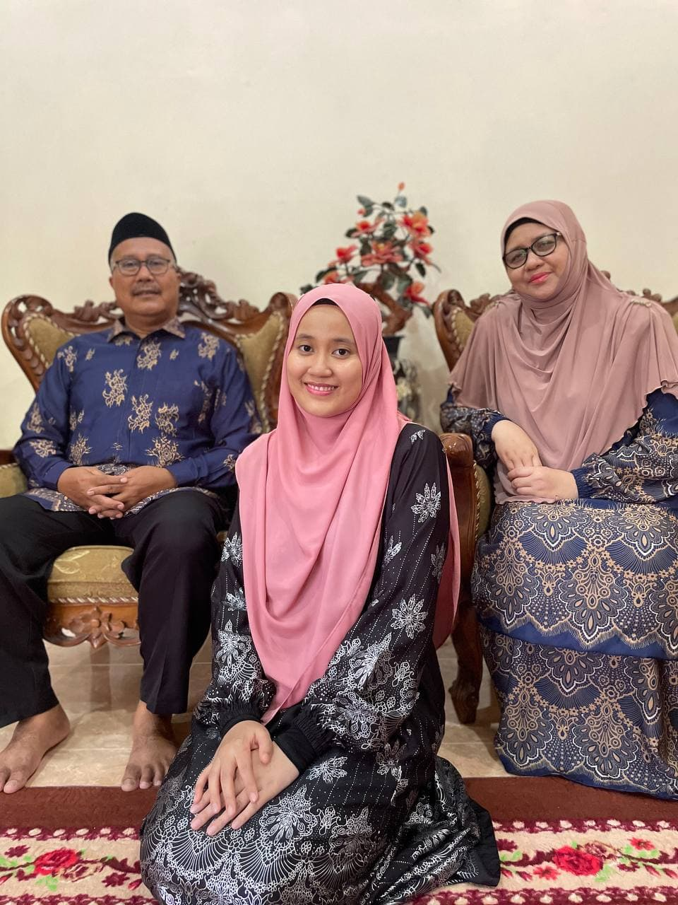

BIODATA
Homepage
Biodata
Education
Gallery
Experience
Contact

ABOUT ME
My full name is Nur Aina Aqilah Binti Mohd Ali. I was born on 28th April 1999 in Machang, Kelantan. I have grown up and been here in Kelantan for almost 22 years. I have six siblings, including me, and I'm the forth one. During my free time, I will do my part time business as Shaklee Independence Distributor. I have do my online shaklee business for 1 year and 3 month. This is considered as my part-time job while continuing my study.
At this current time, I'm just do my online shaklee business at home. Actually i start my online business during pandemic PKP 2.0 2020. I do this online business to get side income and to gain knowledge about business. This is because as a backup for me after finish my study. Every month i could manage to get 3 to 4 figure income from Shaklee. Even the payment is not huge, i'm happy to receive it with those amounts because for me its still huge for student like me and just doing as a part time.
During weekend or semester break, I'll focus more on my job as Shaklee Independece Distributor since we are still in pandemic and still need to stay at home. At least, with this business i can get my own pocket money and make saving for future. Furthermore, i can help more people who need help during this pandemic. I want to help more people and give more value to peolpe out there. If this covid-19 have go away i want to go to holiday with my family because it has been so long time we not spent together and travel together. I hope we will going back as normal soon. Aamiin.